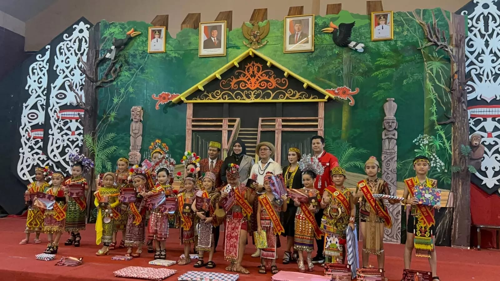

Dokumentasi Perlombaan

Kerajinan Tangan

Numbuk Padi

Tari Daerah

Busana

Musik Daerah
Dayak Taman adalah salah satu sub-suku Dayak yang hidup di daerah Kalimantan Barat, khususnya di wilayah Kapuas Hulu, sekitar Sungai Mendalam dan Sungai Kapuas. Masyarakatnya juga dikenal dengan sebutan Urang Taman atau TURI, yang berarti manusia yang hidup dengan tatanan adat dan budaya yang tertib dan teratur. Suku Dayak Taman berasal dari rumpun Dayak Tamanic/Banuaka, satu rumpun dengan Dayak Embaloh dan Dayak Kalis. Mereka terkenal sebagai masyarakat yang memiliki sistem adat, norma, hukum adat, struktur sosial, dan tradisi budaya yang sangat kuat dan diwariskan secara turun-temurun.
Dayak Taman (urang Taman) masuk dalam rumpun Dayak Banuaka/Tamanic (sebelumnya bergabung dalam Rumpun Ot Danum) yang juga diikuti Dayak Kalis dan Dayak Embaloh (induk Melayu Embaloh/Embaloh Islam). Dayak Taman juga dikenal dengan nama TURI oleh etnis sekitarnya, yang berarti manusia yang pola hidupnya telah tertata, terpola dengan suatu tradisi dan budaya khas. Hal ini dikarenakan, Orang Taman memiliki struktur, adat istiadat, nilai, norma, religi, hukum adat, seni dan budaya yang sejak dahulu telah tertata dengan baik. Dalam masyarakat Dayak Taman terdapat empat strata sosial, yaitu samagat, pabiring (bisa juga di sebut bala samagat), banua, dan paangkam. Strata sosial ini lebih mirip dengan kasta. Kasta yang paling tinggi yaitu samagat pada masa lampau selalu menjadi pembicaraan orang Taman. Sedangkan, yang rendah adalah paangkam yang lebih mirip dengan budak atau tawanan perang. Taman memiliki keragaman budaya yang sampai saat ini masih dipertahankan, seperti menganyam manik, tikar, membuat Mandau, dan tradisi kesenian seperti menari, bersyair, dan lain-lain. Satu diantara potensi yang mendukung lestarinya budaya pada suku ini ialah budaya yang umumnya sudah punah pada sub-suku Dayak di Kalimantan yaitu pola pemukiman rumah betang panjang. Masyarakat adat Daya' Taman di dalam tatanan kemasyarakatan adat mengenal dan memiliki, lambang dan simbol-simbol sebagai identitas kesukuan, seperti pakaian adat, tambe atau bendera, benda pusaka (gunsi, batu belian, nyabur, tombak, parang, dll), benda kesenian (gantungan, tawak, babandi, galentang, dll)
Tari Dayak adalah tarian tradisional suku Dayak...
Busana adat Dayak dikenal dengan hiasan manik-manik, , bulu burung enggang, serta motif ukiran khas suku Dayak. Pakaian pria biasanya berupa rompi dan celana pendek dari kulit kayu atau kain tenun, ditambah mandau (senjata tradisional). Perempuan biasanya mengenakan baju manik dan kain tenun bermotif Dayak. Busana ini mencerminkan identitas dan simbol spiritual masyarakat Dayak.
Musik tradisional Dayak menggunakan sape’, gong, gendang, Suling bambu. Musiknya berirama lembut atau ritmis, tergantung acara, seperti upacara adat, tarian, atau penyambutan tamu. Musik ini mencerminkan keakraban masyarakat Dayak dengan alam dan kepercayaan leluhur.
Anyaman rotan, ukiran kayu, manik-manik, seperti gelang, kalung, dan hiasan baju. Setiap motif biasanya memiliki makna tersendiri, seperti simbol keberanian, perlindungan, atau penghormatan kepada leluhur.
Juhu Singkah, Pais ikan, Tempuyak, Kue Wadai, Nasi bambu (lamang). Kegiatan ini bertujuan melestarikan cita rasa kuliner Dayak serta memperkenalkan keanekaragaman masakan tradisional mereka kepada masyarakat luas.
Kegiatan tradisional menumbuk padi dengan lesung dan alu (penumbuk kayu). Biasanya dilakukan secara bersama-sama sebagai bentuk kerja gotong royong. Bunyi ritmis dari alu yang menghentak lesung sering dijadikan pertunjukan seni tersendiri dan memiliki nilai budaya, seperti simbol kebersamaan dan rasa syukur atas panen.
| Hari | Waktu | Acara | Lokasi |
|---|---|---|---|
| Hari 1 | 08.00 – 15.00 | Pembukaan & Parade Budaya | Panggung Utama |
| Hari 2 | 09.00 – 17.00 | Lomba Tari Dayak | Panggung Seni |
| Hari 3 | 09.00 – 17.00 | Busana Adat Dayak | Aula Pameran |
| Hari 4 | 10.00 – 18.00 | Musik Tradisional Dayak | Panggung Utama |
| Hari 5 | 08.00 – 12.00 | Kerajinan Tangan | Rumah Adat |
| Hari 6 | 08.00 – 11.30 | Lomba Masak Kuliner Khas Dayak | Rumah Adat |
| Hari 7 | 08.00 – 12.00 | Numbuk Padi | Rumah Adat |
| Hari 8 | 12.00 – 13.00 | Istirahat dan Penjurian | Panggung Utama |
| Hari 9 | 08.00 – 15.00 | Persiapan Penutupan dan Pameran | Panggung Utama |
| Hari 10 | 19.00 – Selesai | Acara Penutupan dan Pembagian Hadiah | Panggung Utama |
Pengumuman pemenang lomba budaya Dayak 2025 Panitia Festival Budaya Dayak 2025 dengan bangga mengumumkan para pemenang lomba yang telah berlangsung pada tanggal 1–9 Juli 2025. Penilaian dilakukan berdasarkan kreativitas, ketepatan tema, teknik, penampilan, dan nilai budaya pada setiap kategori.
Kerajinan Tangan
Numbuk Padi
Tari Daerah

Busana
Musik Daerah
| Hari | Waktu | Acara | Lokasi |
|---|---|---|---|
| 1 | 08.00 – 15.00 | Pembukaan & Parade Budaya | Panggung Utama |
| 2 | 09.00 – 17.00 | Lomba Tari Dayak | Panggung Seni |
| 3 | 09.00 – 17.00 | Busana Adat Dayak | Aula Pameran |
| 4 | 10.00 – 18.00 | Musik Tradisional | Panggung Utama |
| 5 | 08.00 – 12.00 | Kerajinan Tangan | Rumah Adat |
| 6 | 08.00 – 11.30 | Lomba Masak | Rumah Adat |
| 7 | 08.00 – 12.00 | Numbuk Padi | Rumah Adat |
| 8 | 12.00 – 13.00 | Penjurian | Panggung Utama |
| 9 | 08.00 – 15.00 | Persiapan Penutupan | Panggung Utama |
| 10 | 19.00 – selesai | Penutupan Festival | Panggung Utama |